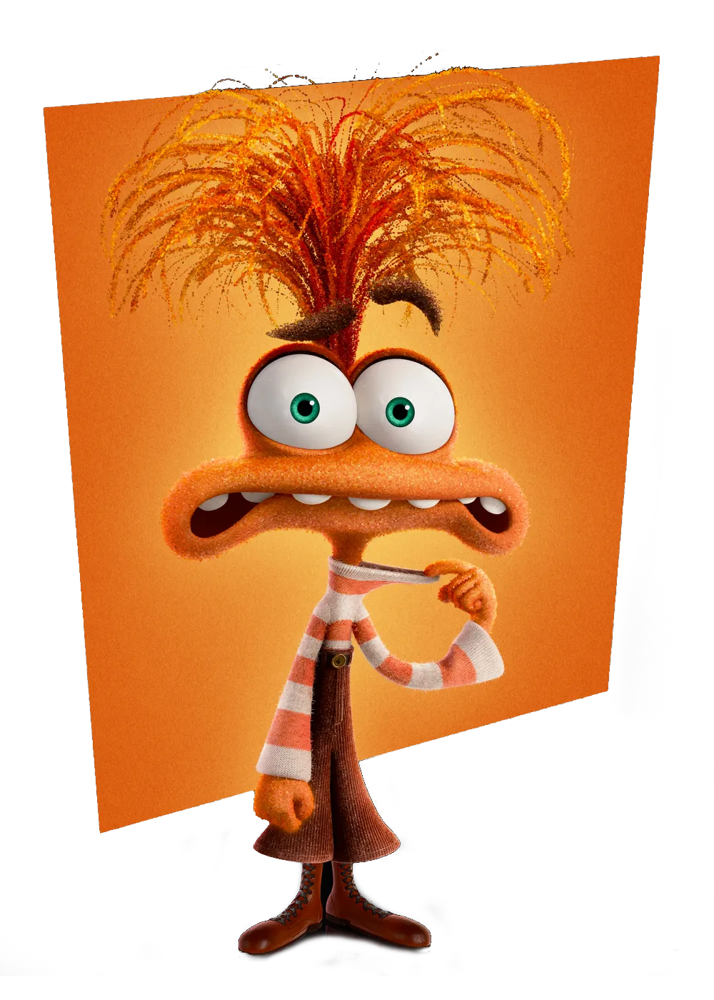

About Anxiety
Anxiety is the newest emotion on the scene in Inside Out 2, and she's got a lot to say. Fast-talking, tightly wound, and endlessly prepared, she joins Headquarters ready to help Riley navigate the stress of growing up. Her job? To anticipate problems before they happen—and then prepare, overprepare, and maybe panic a little. Sure, she can be intense, but underneath all the nerves is a deep desire to keep Riley safe, successful, and one step ahead. Even if that means worrying way too much.
Characteristics
- Nervous Energy - Always buzzing, rarely calm
- Hyper-Aware - Notices every detail, especially potential threats
- Cautious - Thinks five steps ahead to avoid risk
- Analytical - Constantly evaluating what could go wrong
- Protective - Driven by the desire to keep Riley safe
- Tense - Physically and emotionally on edge
- Talkative - Speaks quickly and often, especially under stress
- Well-Intentioned - May be overwhelming, but comes from a place of care